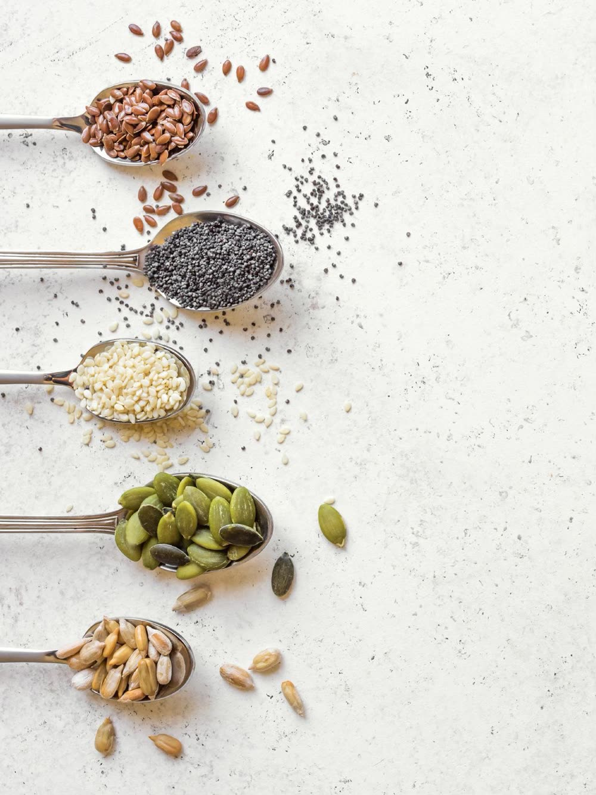

Conseils, réflexions et inspirations pour prendre soin de soi au quotidien.
Bien dormir, c’est aussi prendre soin de soi
Le sommeil est souvent la première chose qu’on sacrifie quand les journées se remplissent. Pourtant, bien dormir change beaucoup de choses : l’énergie, l’humeur, la capacité à gérer le stress. Diminuer les écrans avant de dormir, garder des horaires réguliers, et t’accorder un vrai moment de calme avant de te coucher — rien de spectaculaire, juste des gestes simples, répétés avec régularité.
Quand le stress s’installe : 5 petites choses à faire
Quand le stress prend de la place, il n’est pas toujours possible de tout changer d’un coup. Voici cinq petites choses à essayer : respirer profondément quelques minutes, marcher un peu, écrire ce qui pèse sur toi, réduire les sollicitations autour de toi, et t’accorder un moment de calme, même court. De petits gestes, mais qui peuvent faire une vraie différence.
Les graines dans l’alimentation : comment les intégrer facilement ?
Lin, courge, tournesol, sésame, chia… les graines sont faciles à ajouter à l’alimentation, sans rien bouleverser. Tu peux les parsemer sur un yaourt, une salade ou un porridge, les ajouter à une pâte à pain ou à un smoothie. Elles apportent de la texture et se glissent facilement dans des repas simples.

Une assiette simple pour prendre soin de son énergie
Pas besoin de règles compliquées pour composer une assiette qui te fait du bien : des légumes, une source de protéines, des féculents complets et un peu de matière grasse de qualité suffisent souvent. L’idée n’est pas de suivre un modèle parfait, mais de trouver une base simple que tu peux réellement reproduire, jour après jour.
Quand les émotions prennent beaucoup de place
Il y a des jours où les émotions débordent, sans qu’on sache toujours pourquoi. Plutôt que de les repousser, tu peux essayer de les accueillir : nommer ce que tu ressens, t’accorder le droit de le ressentir, sans te juger. Le calme revient rarement d’un coup — il se retrouve doucement, un peu à la fois.
5 habitudes simples pour prendre davantage soin de soi
Boire suffisamment d’eau, bouger un peu chaque jour, manger à des horaires réguliers, dormir suffisamment, et t’accorder de vraies pauses : des habitudes simples, mais faciles à négliger. Pas besoin de toutes les mettre en place en même temps — choisir une seule habitude et la tenir dans la durée est déjà un vrai pas.
Le miel dans la tradition prophétique
Le miel occupe une place particulière dans la tradition prophétique, où il est mentionné pour ses bienfaits. Sur le plan nutritionnel, il contient aussi des antioxydants et des sucres naturels. Cette double dimension, traditionnelle et nutritionnelle, mérite d’être distinguée clairement : un bel ajout à l’alimentation, sans pour autant remplacer un traitement médical.
Les dattes : un aliment présent dans la tradition musulmane
Les dattes occupent une place importante dans la tradition musulmane, notamment pendant le Ramadan. Elles sont aussi une bonne source d’énergie, de fibres et de minéraux. Faciles à emporter, elles peuvent accompagner une collation, un petit-déjeuner ou simplement un moment de pause dans la journée.
Et si prendre soin de soi commençait par ralentir ?
On associe souvent le bien-être à l’action : faire plus, mieux, plus vite. Mais parfois, prendre soin de soi commence simplement par ralentir — accepter de ne pas être productive à chaque instant, et laisser une vraie place au repos. Ce n’est pas de la paresse : c’est une façon de se respecter.
Le corps nous parle aussi
Fatigue, faim, tensions, sommeil qui se dérègle : le corps envoie souvent des signaux avant que quelque chose ne devienne difficile à porter. Apprendre à les observer, sans chercher à s’auto-diagnostiquer, est une première étape. Si un signal persiste ou t’inquiète, il reste toujours important d’en parler à un professionnel de santé.
Les petits gestes Ashifaa
Aujourd’hui, prends 10 minutes pour marcher sans téléphone. Pas pour être productive. Pas pour atteindre un objectif. Juste pour bouger, respirer et laisser ton esprit souffler.
Avant de vouloir changer toute ta routine, commence par une seule habitude. Une petite chose que tu peux réellement tenir dans ton quotidien vaut mieux qu’une routine parfaite abandonnée après quelques jours.
Les contenus du Journal Ashifaa sont proposés à titre informatif et ne remplacent ni un avis, ni un diagnostic, ni un suivi médical.
Parfois, prendre soin de soi commence simplement par s’accorder un peu de temps.